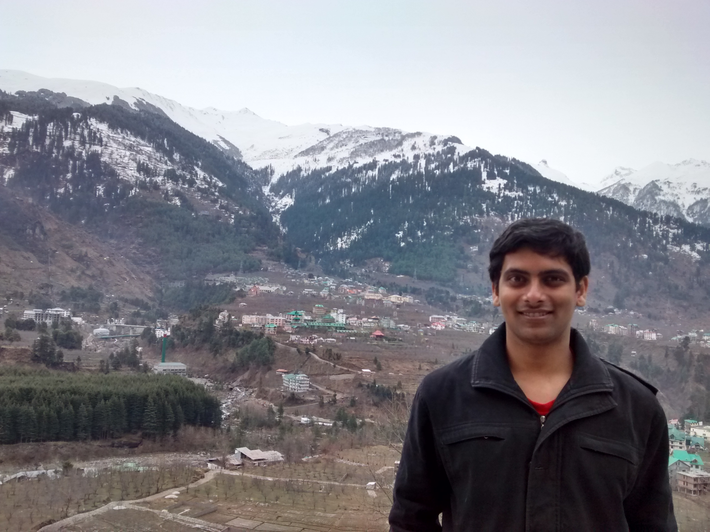

Akshay Kumar
|  | Akshay Kumar |
Hi! I am a fifth year student of Dual Degree Program (BTech–MTech) in Department of Computer Science & Engineering, IIT Kanpur. My research interest includes the whole of Theoretical Computer Sciences with special emphasis on Automata Theory and Approximation Algorithms. I wish to pursue doctoral studies after graduation.
I am presently doing master's thesis under the supervision of Prof S K Mehta. The thesis is in the field of approximation algorithms. Specifically speaking, we are looking at parametrized algorithms and kernelization techniques for  Hard optimization problems. In my other avatars, I was an intern at LSV, ENS Cachan where I worked towards developing a robust theory for Parametrized Communicating Automata (PCA).
Hard optimization problems. In my other avatars, I was an intern at LSV, ENS Cachan where I worked towards developing a robust theory for Parametrized Communicating Automata (PCA).
Updates
Paper on Complementation and Model Checking of Parametrized Communicating Automata accepted to FSTTCS 2014.
Paper on Stemming the flow of information in a social network accepted to SocInfo 2014.
Gave a SIGTACS talk on “Unique Games Conjecture: Subhash Khot wins the Nevanlinna prize”.
This webpage has been generated using jemdoc: a light text-based text markup language which converts a jemdoc markup to static websites.